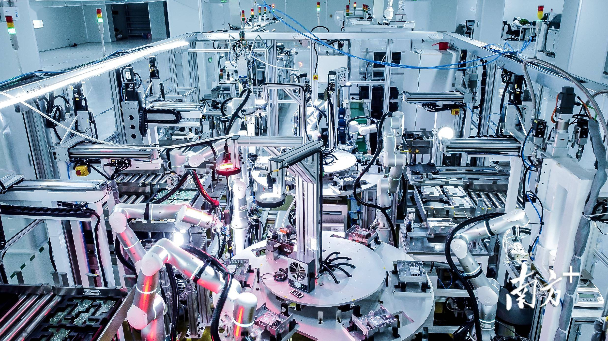
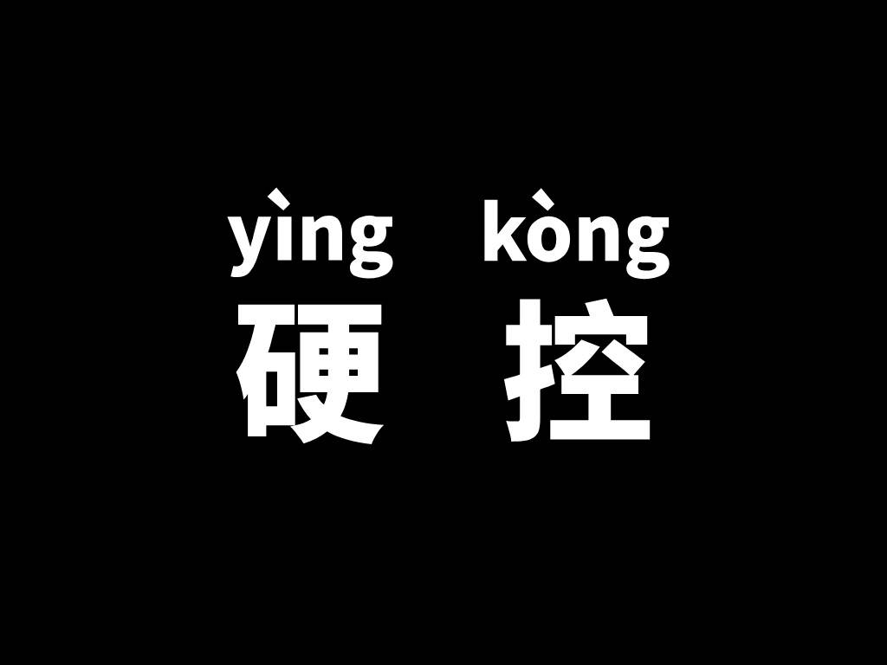
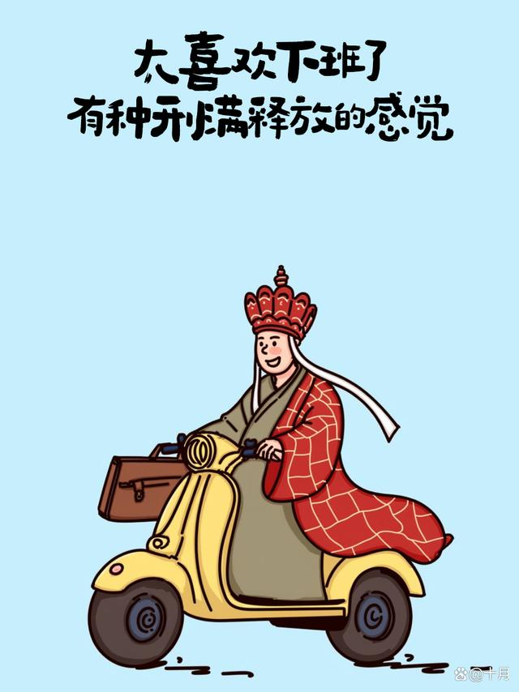
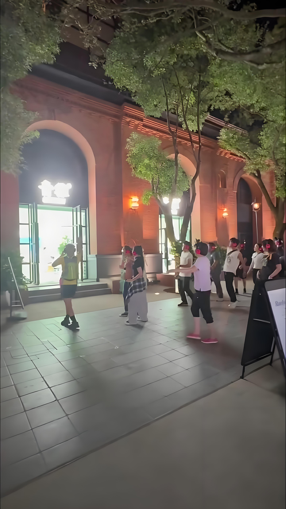
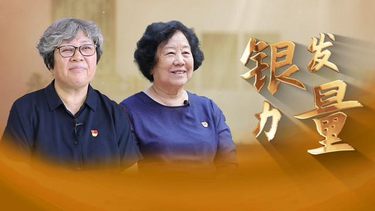

数智化
数字化与智能化的融合，是新型工业化的重要特征。
数字化和智能化的融合体，即在数字化的基础上，引入智能化的高级技术，如自主学习、决策优化、预测分析等，从而提高生产效率、优化资源配置、提升管理水平和创新能力。数智化是新型工业化的鲜明特征，是形成新质生产力的重要途径。
智能向善
强调人工智能应当促进人类福祉。
指人工智能的发展必须有利于更好增进人类的福祉，既能够推动产业变革和经济发展，又能够让社会更加美好，实现可持续发展。我国高度重视人工智能的发展、安全和治理。“以人为本”“智能向善”的发展理念，已成为打造全球人工智能良好生态的基石。
未来产业
指由先进技术驱动的新兴产业。
指由前沿技术驱动，具有战略性、引领性、颠覆性的前瞻性新兴产业，包括未来制造、未来信息、未来材料、未来能源、未来空间和未来健康等新赛道。未来产业的突破和发展，将为中国乃至全球的经济发展带来新的动力和变革。
city不city
通过外来视角诠释中国城市的现代感和国际化。
美国博主保保熊用短视频记录在中国旅游经历，视频中他和妹妹对话：“上海city不city啊？”“好city啊！”“city”本义是城市，也可指城市化的。保保熊表示，他对话中的“city”指的是时髦、洋气、现代化，又指刺激、开心的感觉。自中国实施144小时过境免签政策以来，越来越多的外国朋友来华观光旅游，中国旅行视频成为许多海外博主的“流量密码”，美景美食、高铁出行以及热情好客的中国人民，让外国友人直赞“city”。
硬控
最早来源于游戏术语，如今在社交语境中指某种强烈的吸引力或控制力，让人无法自拔。
“控”即控制，“硬控”即强行控制。“硬控”一词最早来源于游戏，指使游戏玩家在一定时间内无法操控自己角色的一类技能。如今，“硬控”一词的使用逐渐扩展到了更为广泛的社交语境中，用来形容某个事物或现象对某人产生强烈吸引力，让人无法转移视线和关注。
水灵灵地×××
表达了生动、鲜活或引人注目的特质，尤其适用于强调某种吸引力。
“水灵灵”多用来形容人漂亮而有精神，也用于形容动植物等润泽、有生气。“水灵灵地×××”出自一位韩国女歌手在展示照片拼贴画时说的话：“我就这么水灵灵地在中间，周围都是可怕的姐姐们。”网友们纷纷效仿造句，将“水灵灵地”与各类词语搭配，形容某种行为生动、鲜活或值得称道、引人关注。其使用语境逐渐扩大，可用于强调、突出。
班味
描述一种上班后的疲惫感。
“班味”的走红源自网文：“只要上过班，就会沾染上了班味，再也去不掉了。那种上过班的疲惫气质真的是模仿不出来的。”网友热议“班味”，既分享自己的“班味”表现，也分享告别“班味”、平衡工作和生活的种种努力，如旅游、休假、社交、文娱等。
松弛感
在压力环境下，保持冷静和从容应对的心态。
“松弛”既可指不紧张，也可指不严格。如今的“松弛感”一般指面对压力时从容应对、善待自己、不慌张、不焦虑的心理状态。“松弛感”走红源自一位博主的旁观经历：一家人出门旅游，所有行李都被退回，但他们没有吵闹，也没有生气崩溃、相互指责，而是重排行程，气氛全程松弛。博主将此事上传后，“松弛感”引发热议。2024年巴黎奥运会期间，“松弛感”火遍全网。中国队“00后”小将出征奥运表现出的“松弛感”引人瞩目。他们面对压力应对自如，以“新世代的松弛感”和阳光心态展现满满的青春自信，取得了令人信服的比赛成绩。
银发力量
聚焦老年人群体的积极影响力。
“银发”借指老年人，“银发力量”指老年群体在社会各个领域产生的不可忽视的力量。如今，越来越多的老年朋友参与到志愿服务、文化教育等活动中来，为社会发展注入源源不断的“银发力量”。“银发”族词语也不断发展壮大，如“银发浪潮”“银发市场”“银发经济”等。
小孩哥/小孩姐
对有着过人才能的孩子们的尊敬。
“小孩”指的是儿童、幼儿，泛指未成年人。“哥”“姐”若用于非亲属关系，一般是敬称，指年龄与自己相仿或稍大的人。“小孩哥/小孩姐”指的是在某方面具有过人才能的孩子。他们年纪虽小，却拥有非凡才能，成年人自叹不如，便在“小孩”后加上表示敬意的“哥/姐”称呼他们。